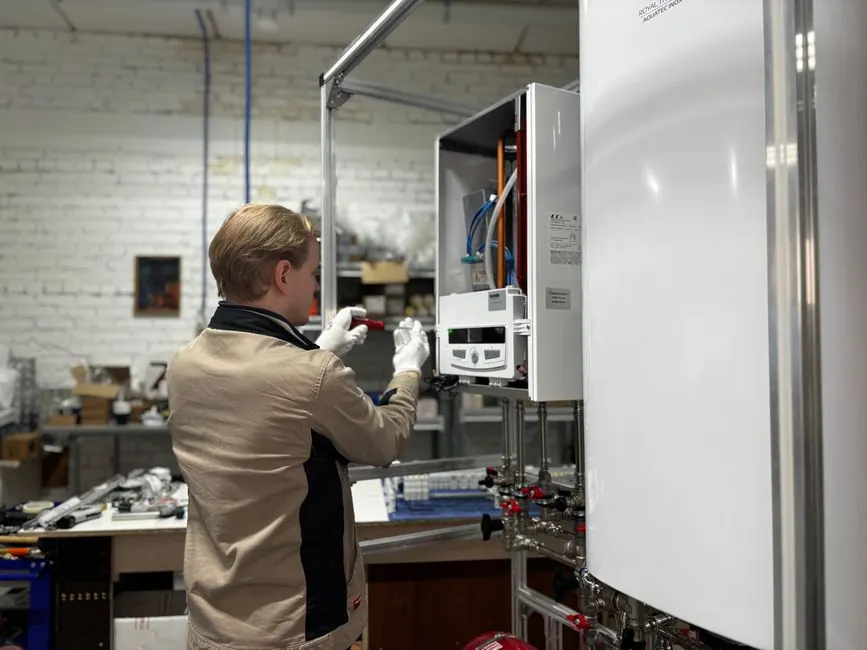

Serving South Sarasota County
Dryer Repair Venice FL
From Venice Island to South Venice and Wellen Park, our appliance repair crews deliver honest, prompt, and affordable dryer service. We diagnose heating faults, squeaking drums, broken belts, and airflow problems on all dryer brands.
South County routingZIP 34285, 34292, 34293Senior discounts available
Local Venice community focus
Honest, Dependable Dryer Service in Venice, FL
Homeowners in Venice appreciate punctuality and transparent pricing. We arrive with clear diagnostic equipment, explain what caused the failure, and provide exact estimates before turning a single screw.
Whether you have a Whirlpool cabrio, Samsung front-loader, LG ThinQ, or classic Maytag commercial dryer, we carry universal repair kits to restore your laundry quickly.
Explore Venice services
Wellen Park & Venice IslandFull South County route support with zero long-distance travel markups.
Services available in Venice
Dryer Services in Venice, FL
Professional repair for all major brands, heating systems, and ventilation lines in Venice.
01
No-Heat Diagnosis
Heating element coil, thermal limiter, and thermostat troubleshooting.
02Dryer Vent Cleaning
Rotary brush lint clearing for single-family homes and condo complexes.
03Noise & Roller Rebuild
Silencing squealing bearings, idler pulleys, and thumping drum support rollers.
04Switch & Power Repair
Repairing broken door latches, push-to-start switches, and electronic boards.
South County dispatch desk
Schedule Venice Dryer Service
Contact our local team for same-day repair appointments across Venice and surrounding communities.
Instant Phone Dispatch
Call Directly for Immediate Service
No waiting for email replies or form submissions. Speak directly with our local Sarasota dispatch team to confirm technician availability and same-day arrival times.
- Same-Day Arrival: Vans stocked with common dryer parts
- Upfront Quotes: Clear diagnostic estimates before work
- All Brands Serviced: Electric & gas dryer certified
- Local Dispatch: Originating from 3856 Yellowstone Cir